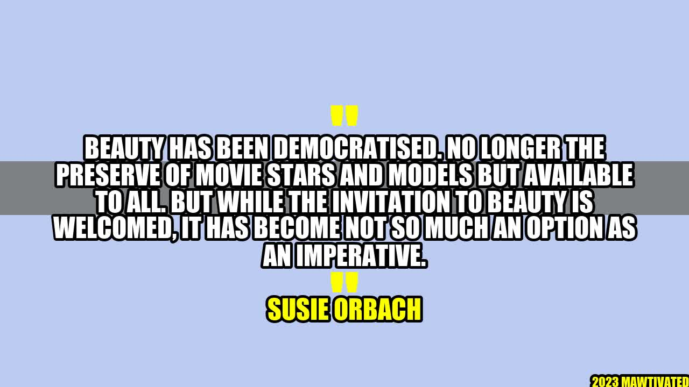

Beauty: An option or an imperative?

Let me tell you a story about a woman I met who I will refer to as Jane.
Jane was always a shy and quiet person who struggled with her self-confidence. Her appearance was one of her biggest concerns, and she often compared herself to models and actresses on social media, feeling inadequate and insecure. One day, she stumbled upon an article that talked about how beauty has been democratised, that it is no longer the preserve of movie stars and models but available to all. This was a turning point for Jane. She decided to take control of her appearance and started focusing on self-care, health, and wellness. She learned that beauty is not just about looking good but feeling good too, and that anyone can achieve it with the right mindset and tools. Over the next few months, Jane transformed into a confident, radiant, and happy person who radiated beauty from within.
Beauty has always been a controversial and thought-provoking topic. For years, it was associated with unattainable standards and limited to a privileged few. However, with the rise of social media and technology, beauty has been democratised, and its definition has expanded to incorporate diversity, inclusivity, and authenticity. As Susie Orbach, a psychotherapist and writer, puts it: "The so-called democratization of beauty that's happened with social media has exposed people to a wider range of bodies, faces, cultures, and skin colours that challenge the traditional norms and make it less hard to visualize oneself as beautiful."
The invitation to beauty is undoubtedly welcomed, but it has also become an imperative, a requirement, and a standard that individuals feel compelled to meet. This pressure to conform to the ideal beauty standards can cause psychological distress, eating disorders, body dysmorphia, and low self-esteem. According to a survey by Dove, 8 out of 10 women feel pressured to conform to an impossible beauty standard, and 7 out of 10 girls feel they are not good enough or do not measure up to the beauty standards set by social media.
Personal anecdotes and case studies
Let me share with you some personal anecdotes and case studies that illustrate the impact of the beauty imperative on people's lives.
- Lisa: Lisa is a 32-year-old woman who has been struggling with anorexia and bulimia since she was 18. Her obsession with achieving a perfect body and being thin started when she saw a Victoria's Secret fashion show on TV. She was mesmerised with how the models looked and felt that her body was inferior and unacceptable. Over the years, Lisa's health deteriorated, and she started experiencing heart problems, gastrointestinal issues, and depression. It was only when she sought professional help that she realised that her pursuit of beauty was actually killing her.
- John: John is a 45-year-old man who has been using steroids and supplements to bulk up and achieve a muscular physique. He was inspired by the bodybuilding culture and the images of chiselled men on Instagram and YouTube. He thought that being ripped was the key to success, confidence, and attractiveness. However, John soon realised that his obsession with his body was affecting his relationships, his job, and his mental health. He was always anxious, tired, and irritable, and he felt like he was living in a constant state of comparison and competition with other men.
- Maria: Maria is a 22-year-old woman who has been struggling with acne and hyperpigmentation for years. She tried all sorts of skincare products, remedies, and beauty treatments, but nothing seemed to work. She felt ashamed, embarrassed, and unworthy of love. However, Maria decided to embrace her imperfections and find inner beauty instead of outer perfection. She started a social media account where she shared her journey, inspired others, and celebrated diversity. She received thousands of messages and comments from people who were touched by her vulnerability and courage.
Examples of democratised beauty
Although the beauty imperative can be harmful, there are also many examples of democratised beauty that have positive effects on people's lives. Here are a few examples:
- Body positivity: The body positivity movement is all about promoting self-love, acceptance, and appreciation of all body types, shapes, and sizes. It challenges the traditional beauty standards and celebrates diversity. Body positivity influencers, such as Ashley Graham, Lizzo, and Jameela Jamil, have inspired millions of people to embrace their bodies and reject the unrealistic beauty ideals set by the media.
- Inclusivity: Inclusivity is about making beauty accessible and relevant to all, regardless of their age, gender, race, or ethnicity. It involves creating beauty products, services, and experiences that cater to diverse needs, preferences, and concerns. For instance, Fenty Beauty, a cosmetics brand created by Rihanna, has launched 50 shades of foundation to cater to all skin types and tones.
- Celebrity authenticity: With social media, celebrities have become more accessible and transparent, and they are using their platform to share their authentic selves. Celebrities, such as Lady Gaga, Selena Gomez, and Demi Lovato, have opened up about their struggles with mental health, body image issues, and self-doubt, inspiring their fans to seek help, share their stories, and be kinder to themselves and others.
Conclusion
In conclusion, beauty is no longer an option but an imperative in today's society. However, it is essential to distinguish between the harmful beauty imperative that pressures individuals to conform to unattainable standards and the positive democratised beauty that embraces diversity, inclusivity, and authenticity.
Here are three points to keep in mind:
- Beauty is subjective: Beauty is in the eye of the beholder, and everyone has their own unique definition of beauty. There is no one-size-fits-all beauty standard, and it is essential to respect and celebrate diversity.
- Beauty starts from within: Beauty is not just about looking good but feeling good too. It involves taking care of your physical, mental, and emotional well-being and being kind to yourself and others.
- Beauty is a journey: Beauty is not an end goal but a process of self-discovery and self-love. It involves experimenting, learning, and growing, and it requires patience, persistence, and positivity.
Hashtags and SEO keywords
Here are some trending hashtags and SEO keywords related to beauty:
- #bodypositivity
- #selflove
- #beautystandards
- #inclusivity
- #mentalhealth
- #cosmetics
- #personalcare
- #womenempowerment
- #diversity
- #authenticity
Article category
This article belongs to the lifestyle and wellness category.
Curated by Team Akash.Mittal.Blog
Curated by Team Akash.Mittal.Blog
Share on Twitter Share on LinkedIn